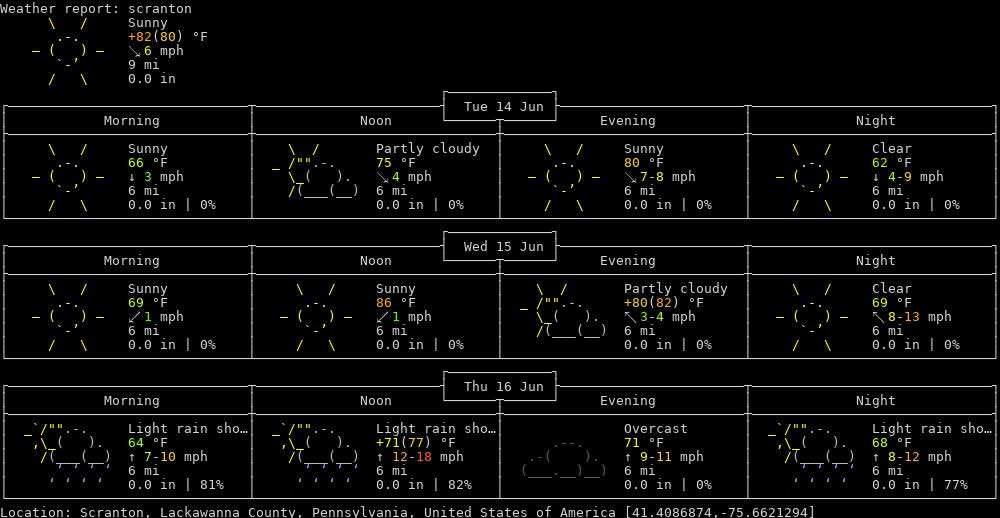

Table of Contents
- Weather Forecasts
- New York, NY: Weather Forecast
- Nashville, TN: Weather Forecast
- Scranton, PA: Weather Forecast
- Poinciana, FL: Weather Forecast
- Weather Radar Gifs
- New York, NY: Weather Radar Gif
- Nashville, TN: Weather Radar Gif
- Scranton, PA: Weather Radar Gif
- Poinciana, FL: Weather Radar Gif
- Cloud Coverage Gifs
New York Weather Forecast (from wttr.in):
New York Weather Radar Gif (from National Weather Service Apache Server):
New York Weather Cloud Coverage (from National Weather Service GOES Image Viewer):

Nashville Weather Forecast (from wttr.in):
Nashville Weather Radar Gif (from National Weather Service Apache Server):
Nashville Weather Cloud Coverage (from National Weather Service GOES Image Viewer):

Scranton Weather Forecast (from wttr.in):

Scranton Weather Radar Gif (from National Weather Service Apache Server):
Scranton Weather Cloud Coverage (from National Weather Service GOES Image Viewer):

Poinciana Weather Forecast (from wttr.in):
Poinciana Weather Radar Gif (from National Weather Service Apache Server):
Poinciana Weather Cloud Coverage (from National Weather Service GOES Image Viewer):